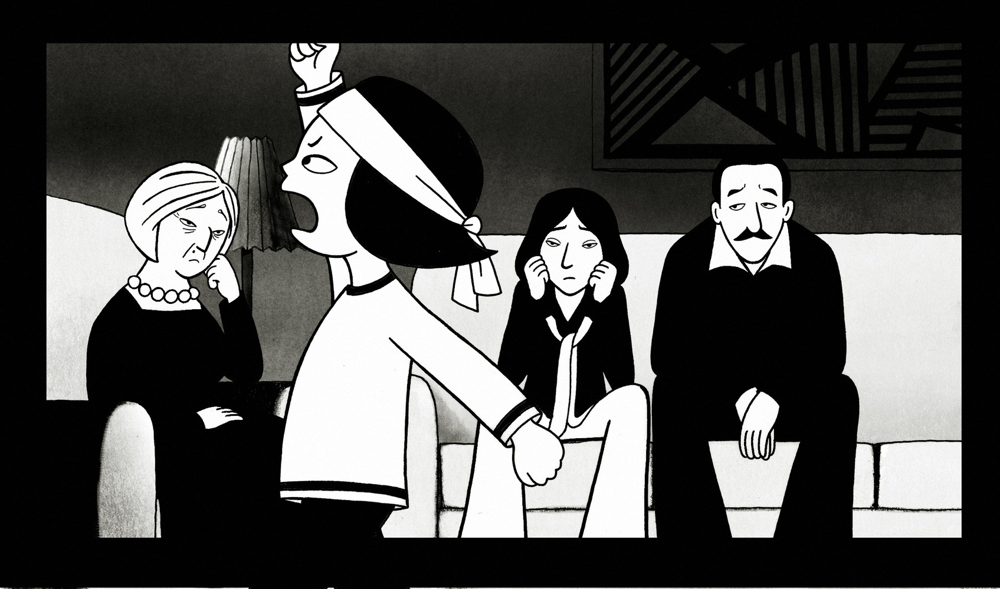
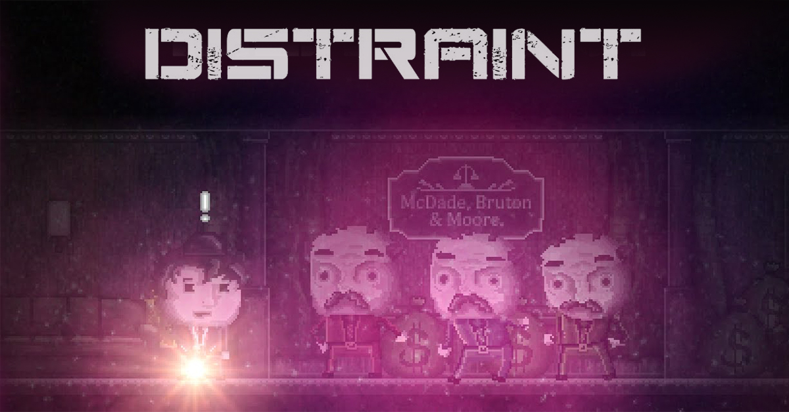

Good Watches for the Week
Date: 2018.02.07
This week, I watched the movie Persepolis for a class. Part of the experience of the protagonist resonates with mine. And I don’t mean the experience of her country’s war and revolution part (I absolutely admire her courage during which), but the part where she studies away from home. She was having mental breakdown and became homeless. But when she called back home after waking up in a hospital, her parents are worried about her and are still supportive of whatever the decisions she made. Immediately I thought of my own parents, who are so supportive of me. And I thought the story has a great narrative where the viewers would find something touching to them.

Also, I watched a YouTuber playing this video game Hidden Agenda, and the game’s format interests me. The control is quite novel as the game requires you to use your phone to react, instead of regular game pad or something . I still haven’t quite figure the reason why they made the decision to ask user to use cell phone for control, or what is the significance of this kind of control, because I haven’t finished watching the whole series of videos. But from watching this I just got the idea that perhaps for narrative-heavy games, using an actual cellphone would increase the immersive experience. I was imaging in Grand Theft Auto V, the virtual phone in that game transforms into using player’s actual cell phone (by developing an app or something), and have characters in the game calling players on their actual phones. Anyways, It seems like an interesting idea.
I also watched a video game streamer on Bilibili (a video sharing website in China) playing the game Distraint made by Jesse Makkonen. The theme of game is dark, gloomy and crooked (in an artistic way). I feel his goals of having “psychological horror” and “twisted humor” in his games have been achieved in this game. In this story, the protagonist has been in a moral conflict mentally as he starts his career to collect houses back for various reasons. There are three debtors: a tricked-to-be-broke elderly woman, a hunter whose house is in the way of construction, and a drug addict in the order of the story. But I do feel the narrative orders of the story could be rearranged a bit so that players feel the mental dilemma aggravates. At the moment, If I look at the plots rationally, there seems to be nothing wrong with the protagonist’s behaviors lawfully and I couldn’t quite resonate with the protagonist in terms of his mental dilemma.
